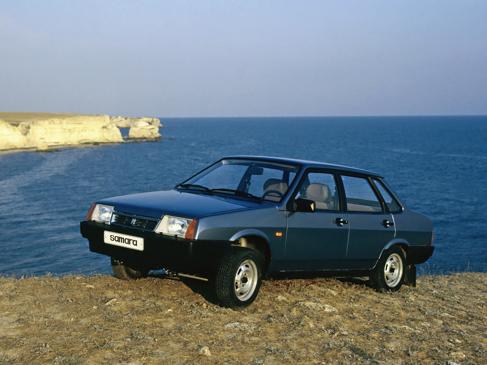
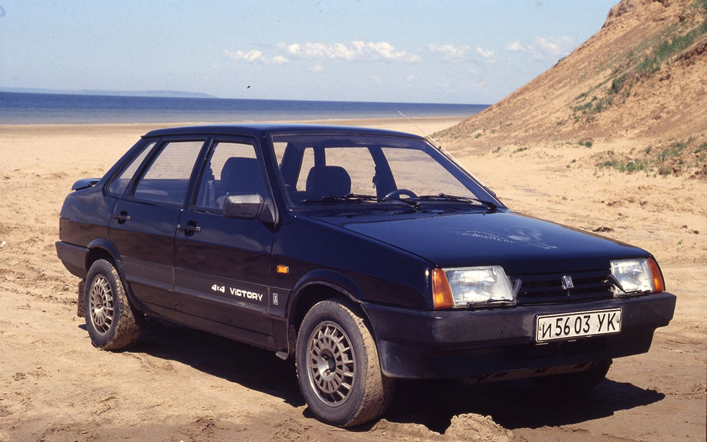
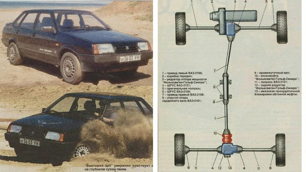
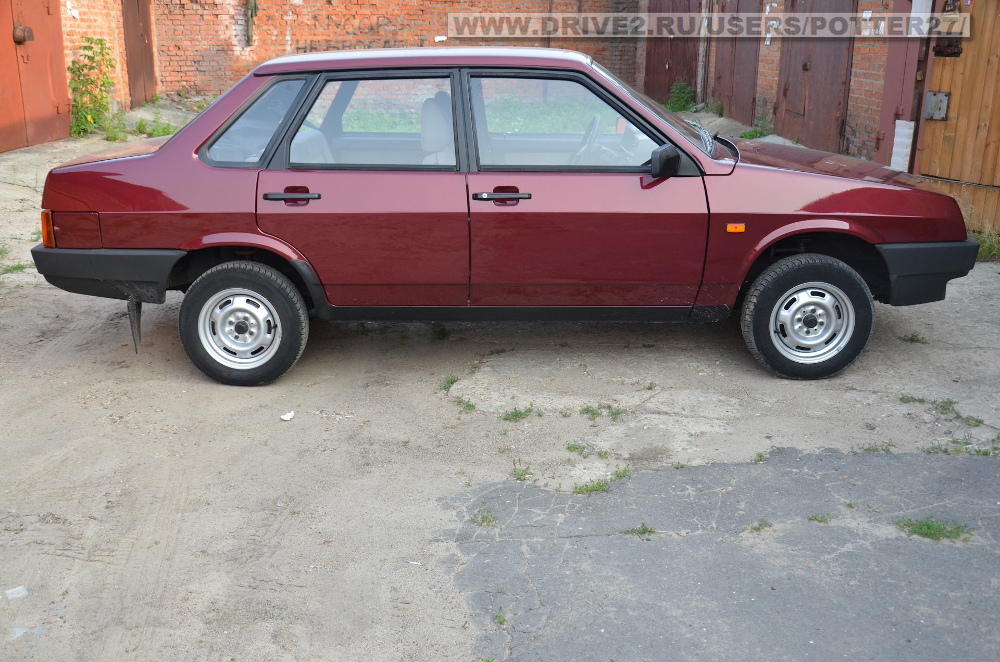
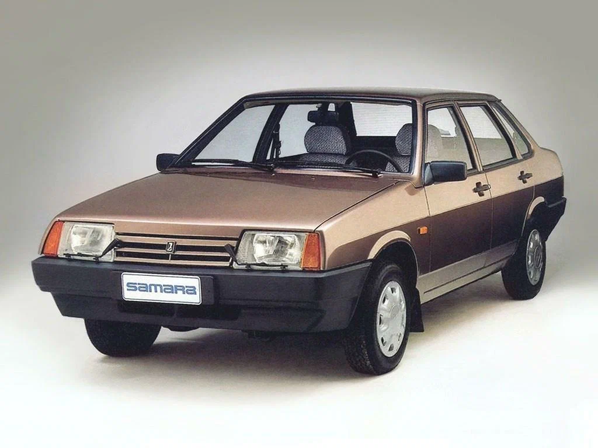
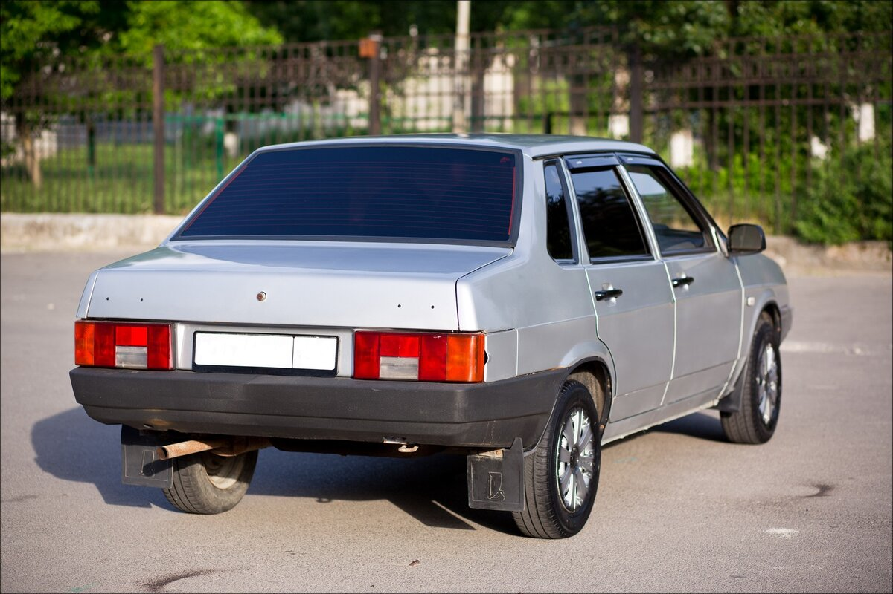

ВАЗ-21099 «Спутник» (простореч. название «девяносто девятая») — советский и российский легковой автомобиль II группы малого класса, первый переднеприводной седан Волжского автомобильного завода. Представляет собой наиболее полноразмерную модель в семействе «Лада Спутник».
Машина была подготовлена к конвейерному выпуску в марте 1990 года, но начало производства было отложено в связи с задержкой в поставках комплектующих от предприятий-смежников. Серийно выпускался на заводе АвтоВАЗ с 22 декабря 1990 года по 30 июня 2004 года. До конца 2011 года собирался на Украине на заводе «ЗАЗ» из российских машинокомплектов с элементами салона от ВАЗ-2115. На экспорт ВАЗ-21099 шёл под названиями Lada Forma, Lada Sagona, Lada Diva, Lada Sable.
Работа по созданию кузова типа седан семейства моделей «Спутник» началась в 1980 году. Первоначально он получил индекс «ВАЗ-2110». Через год появился полноразмерный макет кузова. В 1983 году сформировалась внешность передней части: в отличие от моделей с кузовом типа хетчбэк, передние крылья и капот стали доходить до края кузова, а также появилась другая решётка радиатора. Впоследствии данный вариант оформления стали применять и для хетчбэков. В конце 1985 года работа была закончена, после чего предстояло прохождение приёмочных испытаний. Перед этим создатели, ради сокращения испытательного процесса, пошли на некий формальный обман — изменили индекс модели на «ВАЗ-21099», по которому автомобиль якобы являлся модификацией пятидверного хетчбэка — модели «ВАЗ-2109». Тем не менее, по причине прекращения выделения средств для разработок, попадание данной модели в серийное производство произошло с некоторым запозданием.
От остальных моделей семейства «Самара» ВАЗ-21099 изначально отличала передняя часть кузова с длинными крыльями, без пластикового «клюва» спереди и с более длинным капотом, новая решётка радиатора, панель приборов стала серого цвета, в отличие от коричневых панелей на других «Самарах». Впоследствии эти нововведения были перенесены на всё семейство «Самара» ради унификации моделей.
С момента начала производства в разные годы выпускались модификации с карбюраторными и впрысковыми двигателями рабочим объёмом 1,3 л (ВАЗ-210993) и 1,5 л (ВАЗ-210990). В модельном ряду ОАО «АВТОВАЗ» представлены модификации ВАЗ-21099 с карбюраторным и впрысковым двигателями 210992 (ВАЗ-21099i). Также была разработана версия с постоянным полным приводом (Лада-Виктори), о ней ниже.
В 1997 году появилась модификация 21099-91 с роторным двухсекционным двигателем ВАЗ-415.
С 1997 г. на опытно-промышленном производстве «АвтоВАЗа» начали параллельно производить модель ВАЗ-2115, представлявшую собой рестайлинговую версию ВАЗ-21099 и первую машину так называемого семейства «Самара-2». С 1999 года появился вариант с «европанелью» и «евросалоном» от Самары-2.
В конце 2004 г. ВАЗ-21099 снят с производства на АвтоВАЗ и полностью заменён моделью ВАЗ-2115, после чего была куплена лицензия на производство модели на Украине ЗАО ЗАЗ. В конце 2011 года производство ВАЗ-21093 (хетчбэк) и ВАЗ-21099 (седан) было окончательно прекращено.
В начале 1990-х годов тольяттинская компания «Металлик-Квадро» производила на базе ВАЗ-21099 полноприводную модификацию повышенной проходимости — LADA Victory. На неё устанавливались элементы трансмиссии от полноприводного Volkswagen Golf Syncro — угловой (передний) редуктор, задний редуктор, вискомуфта и задняя независимая подвеска.
Угловой редуктор соединялся с вискомуфтой длинной полуосью от базовой 21099, а вискомуфта с задним редуктором — короткой. Задние полуоси применялись от ВАЗ-2121 «Нива». Задняя подвеска, стабилизатор и редуктор ставились на оригинальный подрамник, в результате чего бак был смещён назад и увеличен до 60 литров, однако из багажника была убрана ниша запасного колеса. Двигатель был форсирован, а также были изменены передаточные числа коробки передач.
Опционально предлагалась установка усиленной корзины сцепления и доработанных стоек подвески. Внешне Victory отличался от базового ВАЗ-21099 задним спойлером, легкосплавными 14-дюймовыми дисками и шильдиками «Victory» и «4×4» на крышке багажника. Стоимость переделки базовой модели в Victory начиналась от 6500 долларов, а выпуск ограничился единичными экземплярами.
Виктория:


Фото:


